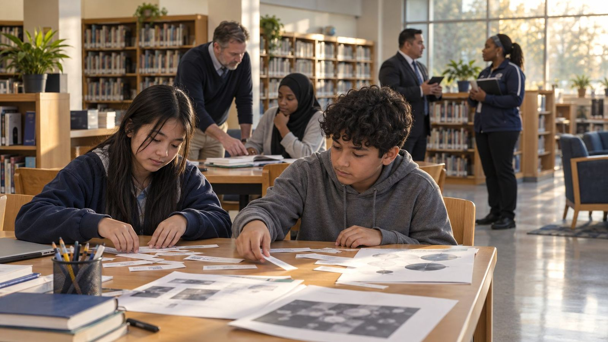
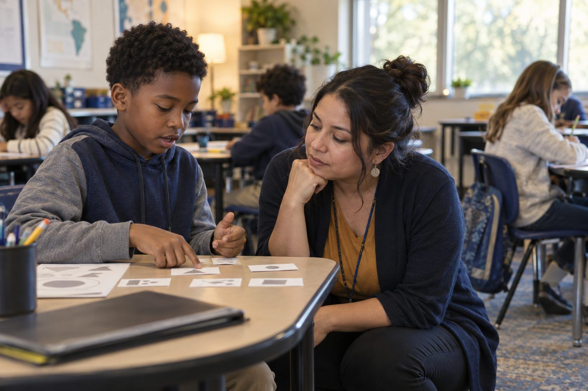
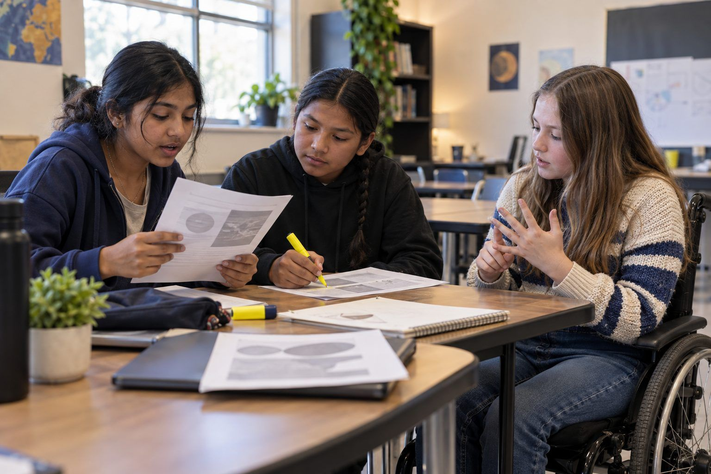
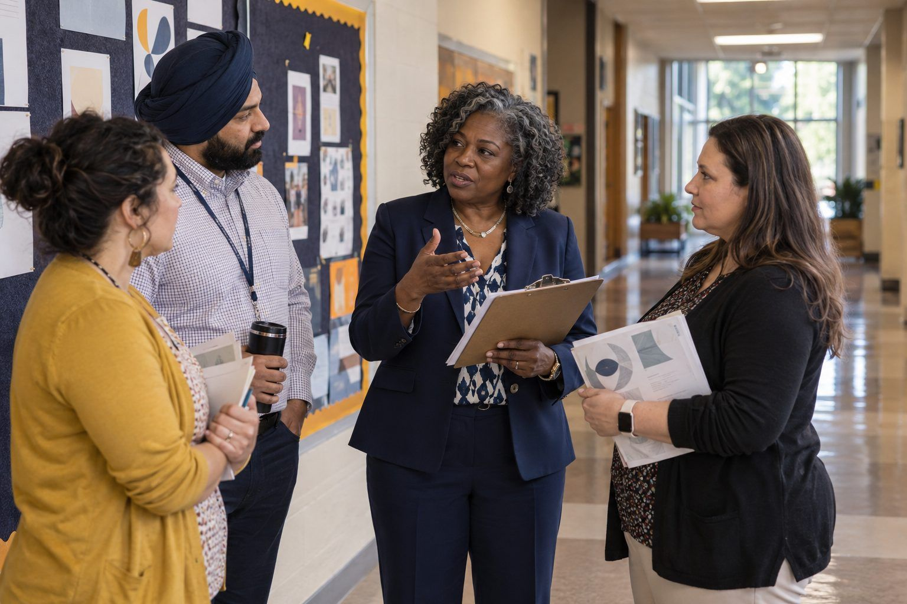
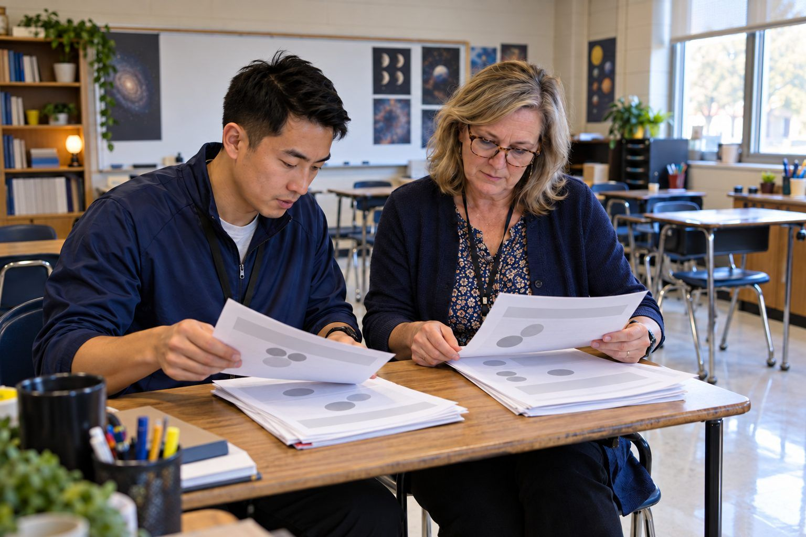
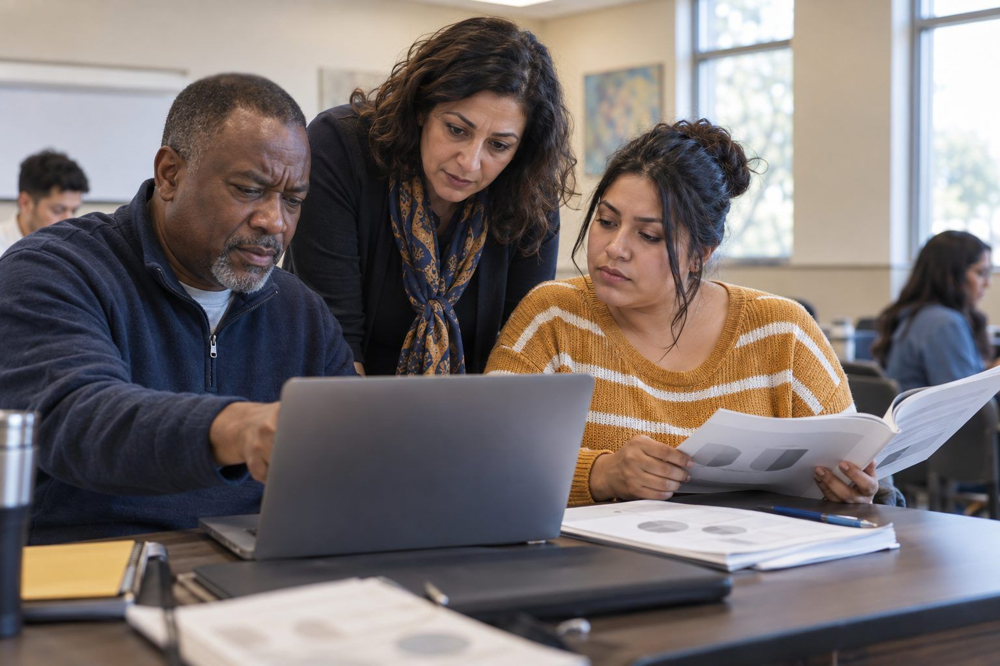

Las Expectativas Esenciales de Aprendizaje
Las ELE de TCEA ofrecen a docentes, estudiantes, coaches, líderes escolares y a cualquier persona que trabaje con IA un lenguaje común para un mejor aprendizaje. Cada rol tiene cinco áreas clave con tres indicadores cada una, redactados como “Sé”, “Puedo” y “Soy consciente”. Debajo de cada indicador están las actividades de este banco que lo desarrollan.

De un vistazo
Las infografías de TCEA sobre las ELE actualizadas. Elija una para abrirla en tamaño completo.
{kind=link}
{kind=link}
{kind=link}
{kind=link}
{kind=link}
Docentes y bibliotecarios docentes

Las Expectativas Esenciales de Aprendizaje (ELE) para docentes están diseñadas para guiar a los educadores en el desarrollo de las habilidades y los conocimientos necesarios para una enseñanza eficaz y actual. Estas expectativas se basan en investigaciones sobre las mejores prácticas educativas, incluidos los principios del aprendizaje visible de John Hattie, que destacan la importancia de la claridad del docente y de la retroalimentación. También incorporan hallazgos de estudios sobre la integración de la tecnología, la enseñanza culturalmente receptiva y el desarrollo del pensamiento crítico. Al centrarse en áreas como la integración de la tecnología, la alfabetización digital, la enseñanza inclusiva, la construcción de relaciones y el pensamiento crítico, estas ELE buscan dotar a los docentes de las herramientas que necesitan para crear entornos de aprendizaje motivadores, eficaces e inclusivos que preparen a los estudiantes para su futuro.
“La influencia individual más poderosa para mejorar el rendimiento es la retroalimentación.”
John Hattie
Preguntas orientadoras
- ¿Qué estrategias estoy usando para construir relaciones positivas con mis estudiantes?
- ¿Cómo estoy fomentando las habilidades de pensamiento crítico en mis lecciones?
- ¿Con qué eficacia estoy integrando la tecnología en mis prácticas de enseñanza?
- ¿De qué maneras estoy promoviendo la alfabetización digital entre mis estudiantes?
- ¿Cómo estoy creando un entorno de aprendizaje inclusivo que respete la diversidad?
1.0Integración de la tecnología
- T1.1
Sé cómo integrar la tecnología de manera fluida en mis prácticas de enseñanza.
Ejemplo de las ELE
Los estudiantes usan herramientas digitales de mapas mentales para generar y organizar ideas para un proyecto de investigación sobre la historia de Texas.
TEKS: Grade 7 Social Studies TEKS 7.21(A) - "differentiate between, locate, and use valid primary and secondary sources"
- T1.2
Puedo usar herramientas de IA para enriquecer las experiencias de aprendizaje de los estudiantes.
Ejemplo de las ELE
Los estudiantes usan una app de aprendizaje de idiomas con IA para practicar conversaciones en español y reciben retroalimentación en tiempo real sobre su pronunciación y gramática.
TEKS: Grade 1-5 LOTE TEKS 1.A - "engage in oral and written exchanges of learned material to socialize and to provide and obtain information"
- T1.3
Conozco las tecnologías emergentes y sus posibles aplicaciones en la educación.
Ejemplo de las ELE
Los estudiantes usan visores de realidad virtual para explorar el sistema solar, lo que mejora su comprensión del movimiento y la escala de los planetas.
TEKS: Grade 6 Science TEKS 6.11(A) - "describe the physical properties, locations, and movements of the Sun, planets, moons, meteors, asteroids, and comets"
2.0Alfabetización digital
- T2.1
Puedo enseñar a los estudiantes a evaluar críticamente la información en línea.
Ejemplo de las ELE
Los estudiantes analizan artículos de noticias de diversas fuentes sobre un acontecimiento actual, identifican posibles sesgos y verifican las afirmaciones.
TEKS: Grade 8 English Language Arts TEKS 8.9(C) - "analyze the author's use of print and graphic features to achieve specific purposes"
- T2.2
Sé cómo guiar a los estudiantes en el uso seguro y responsable de internet.
Ejemplo de las ELE
Los estudiantes crean carteles de ciudadanía digital que describen las mejores prácticas de seguridad en línea y de uso responsable de las redes sociales.
TEKS: Grade 6 Technology Applications TEKS 6.2(A) - "demonstrate an understanding of technology concepts"
- T2.3
Conozco estrategias para ayudar a los estudiantes a identificar y combatir la desinformación.
Ejemplo de las ELE
Los estudiantes participan en un reto de "noticias falsas" en el que deben identificar información engañosa en publicaciones de redes sociales y explicar cómo verificar los hechos.
TEKS: Grade 7 English Language Arts TEKS 7.9(F) - "analyze characteristics of multimodal and digital texts"
3.0Enseñanza inclusiva
- T3.1
Sé cómo crear un ambiente acogedor en el salón de clases para todos los estudiantes.
Ejemplo de las ELE
El docente crea un muro de palabras multilingüe con términos matemáticos clave en los idiomas presentes en el salón.
TEKS: Grade 3 Mathematics TEKS 3.1(D) - "communicate mathematical ideas, reasoning, and their implications using multiple representations"
- T3.2
Puedo adaptar mis métodos de enseñanza para atender diversas necesidades de aprendizaje.
Ejemplo de las ELE
El docente ofrece varias opciones para demostrar la comprensión de un concepto de ciencias, como informes escritos, presentaciones orales y modelos visuales.
TEKS: Grade 5 Science TEKS 5.2(F) - "communicate valid conclusions in both written and verbal forms"
- T3.3
Soy consciente de las diferencias culturales y de cómo influyen en el aprendizaje.
Ejemplo de las ELE
Los estudiantes exploran y comparten perspectivas culturales sobre la conservación del medio ambiente, y relacionan los problemas globales con las prácticas locales.
TEKS: Grade 4 Social Studies TEKS 4.9(A) - "describe ways people have adapted to and modified their environment in Texas"
4.0Construcción de relaciones
- T4.1
Sé cómo fomentar relaciones positivas con mis estudiantes.
Ejemplo de las ELE
El docente implementa una rutina diaria de bienvenida en la que los estudiantes comparten cómo se sienten y cualquier inquietud, lo que fomenta una comunidad de apoyo en el salón.
TEKS: Grade K-12 Health TEKS 115.16(b)(10)(A) - "practice communication skills in building and maintaining healthy relationships"
- T4.2
Puedo crear oportunidades de colaboración y aprendizaje entre pares para los estudiantes.
Ejemplo de las ELE
Los estudiantes trabajan en parejas para resolver problemas verbales complejos, se explican su razonamiento y se dan retroalimentación constructiva.
TEKS: Grade 6 Mathematics TEKS 6.1(E) - "create and use representations to organize, record, and communicate mathematical ideas"
- T4.3
Soy consciente de la importancia del apoyo emocional para el éxito académico.
Ejemplo de las ELE
El docente implementa un programa de mentoría entre pares en el que los estudiantes mayores apoyan a los más pequeños con estrategias de comprensión lectora.
TEKS: Grade 3 English Language Arts TEKS 3.6(I) - "monitor comprehension and make adjustments such as re-reading, using background knowledge, asking questions, and annotating when understanding breaks down"
5.0Pensamiento crítico
- T5.1
Sé cómo diseñar lecciones que promuevan habilidades de pensamiento de orden superior.
Ejemplo de las ELE
Los estudiantes diseñan y realizan un experimento para comprobar el efecto de distintas variables en el crecimiento de las plantas, analizan los resultados y sacan conclusiones.
TEKS: Grade 7 Science TEKS 7.2(E) - "design and implement experimental investigations by making observations, asking well-defined questions, formulating testable hypotheses, and using appropriate equipment and technology"
- T5.2
Puedo usar técnicas de preguntas para estimular un aprendizaje profundo.
Ejemplo de las ELE
El docente usa la técnica del seminario socrático para guiar a los estudiantes en el análisis de los temas de una novela y los anima a sustentar sus interpretaciones con evidencia del texto.
TEKS: Grade 8 English Language Arts TEKS 8.5(H) - "synthesize information to create new understanding"
- T5.3
Conozco estrategias para desarrollar la capacidad de los estudiantes para resolver problemas.
Ejemplo de las ELE
Los estudiantes participan en un proyecto al estilo "Shark Tank" en el que identifican un problema de la comunidad, desarrollan una solución innovadora y presentan sus ideas ante un panel.
TEKS: Grade 5 Social Studies TEKS 5.24(B) - "generate and implement a plan for identifying a problem, gathering information, listing and considering options, considering advantages and disadvantages, choosing and implementing a solution, and assessing the effectiveness of the solution"
Estudiantes

Las Expectativas Esenciales de Aprendizaje (ELE) para estudiantes están diseñadas para preparar a los alumnos para el éxito en un mundo cada vez más complejo e interconectado. Estas expectativas se basan en investigaciones de las ciencias cognitivas, la psicología educativa y marcos integrales de habilidades. Se apoyan en estudios que destacan la importancia de la alfabetización digital, el aprendizaje autorregulado y la resolución de problemas para el éxito académico y profesional futuro. Las ELE para estudiantes se centran en desarrollar la competencia tecnológica, la conciencia sobre la seguridad en línea, las habilidades de colaboración, la capacidad de aprender de forma autónoma y la resolución creativa de problemas. Al dominar estas competencias, los estudiantes estarán mejor preparados para afrontar las complejidades de la vida moderna y convertirse en aprendices de por vida.
“El aprendizaje visible ocurre cuando los docentes ven el aprendizaje a través de los ojos de los estudiantes y los ayudan a convertirse en sus propios maestros.”
John Hattie
Preguntas orientadoras
- ¿Me esfuerzo al máximo por aprender por mi cuenta?
- ¿Uso lo que aprendo para resolver problemas de la vida real?
- ¿Qué tan bien trabajo con los demás cuando aprendemos juntos?
- ¿Sé usar bien diferentes herramientas y computadoras para ayudarme a aprender?
- ¿Me mantengo seguro y tomo buenas decisiones cuando uso internet?
1.0Destreza tecnológica
- S1.1
Sé cómo usar la tecnología para apoyar mi aprendizaje.
Ejemplo de las ELE
Los estudiantes crean un portafolio digital que muestra sus mejores trabajos de varias materias, con diversos elementos multimedia.
TEKS: Grade 8 Technology Applications TEKS 1.A - "create and present digital content using appropriate tools and techniques"
- S1.2
Puedo adaptarme a nuevas herramientas y plataformas digitales.
Ejemplo de las ELE
Los estudiantes exploran y usan una nueva plataforma de programación para crear una historia interactiva, lo que demuestra su capacidad de adaptarse a un software desconocido.
TEKS: Grade 6 Technology Applications TEKS 4.D - "create interactive documents using modeling, simulation, or concept-mapping software"
- S1.3
Sé cómo la IA puede ayudarme en mis estudios.
Ejemplo de las ELE
Los estudiantes usan herramientas de traducción con IA para comprender mejor un texto en español y comentan los beneficios y las limitaciones de la tecnología.
TEKS: Grade 7 LOTE TEKS 3.A - "use resources (that may include technology) in the language and cultures being studied to gain access to information"
2.0Seguridad en línea
- S2.1
Sé cómo proteger mi información personal en internet.
Ejemplo de las ELE
Los estudiantes crean un plan de seguridad digital con estrategias para proteger su información personal en las redes sociales y otras plataformas en línea.
TEKS: Grade 7 Technology Applications TEKS 2.A - "demonstrate an understanding of technology concepts, including terminology for the use of operating systems, network systems, virtual systems, and learning systems appropriate for Grades 6-8 learning"
¿Privado o para compartir?¿Qué saben mis apps?Auditoría del rastro de datosBocinas inteligentes, decisiones inteligentesEl poder de las contraseñas y los Guardianes de SecretosEl rastro de huellas digitalesLa pecera del phishingLo que sabe tu app de mapasMi plan de seguridad digitalRevisa tu carrito: estafas de compras y dinero en línea - S2.2
Puedo identificar fuentes de información confiables en internet.
Ejemplo de las ELE
Los estudiantes evalúan un conjunto de sitios web sobre un tema histórico, los clasifican según su credibilidad y explican su razonamiento.
TEKS: Grade 8 Social Studies TEKS 29.B - "analyze information by sequencing, categorizing, identifying cause-and-effect relationships, comparing, contrasting, finding the main idea, summarizing, making generalizations and predictions, and drawing inferences and conclusions"
¿Anuncio o información?¿Es real este consejo de salud?¿Quién hizo esto?¿Real, falso o generado?¿Real, inventado o cambiado?¿Real, remezclado o inventado?Autopsia de un algoritmoCacería de alucinacionesDetectives de fotosEl juego del feedFuente primaria vs. resumen de IALaboratorio: de la señal al titularMesa electoral contra los deepfakesRevisa en dosRevisa tu carrito: estafas de compras y dinero en línea - S2.3
Soy consciente de los posibles riesgos de compartir contenido en internet.
Ejemplo de las ELE
Los estudiantes participan en una actividad de dramatización en la que toman decisiones sobre compartir distintos tipos de contenido en internet y comentan sus posibles consecuencias.
TEKS: Grade 6 Health TEKS 22.B - "explain the importance of taking responsibility for establishing and implementing health maintenance for individuals and family members of all ages"
¿Privado o para compartir?¿Real, falso o generado?Auditoría del rastro de datosBocinas inteligentes, decisiones inteligentesCírculo de noticias del futuroClics amablesDerechos para remezclarDetectives de fotosEl juego del feedEl poder de las contraseñas y los Guardianes de SecretosEl rastro de huellas digitalesLa pecera del phishingLaboratorio: de la señal al titularLo que sabe tu app de mapasMi plan de seguridad digital
3.0Aprendiz colaborativo
- S3.1
Sé cómo trabajar eficazmente en equipo.
Ejemplo de las ELE
Los estudiantes colaboran en un proyecto grupal de ciencias y usan herramientas en línea para asignar roles, fijar fechas límite y dar seguimiento al progreso.
TEKS: Grade 7 Science TEKS 3.D - "construct tables and graphs, using repeated trials and means, to organize data and identify patterns"
- S3.2
Puedo comunicar mis ideas con claridad a los demás.
Ejemplo de las ELE
Los estudiantes preparan y presentan un discurso persuasivo sobre un tema de actualidad, con elementos multimedia que refuerzan su mensaje.
TEKS: Grade 8 English Language Arts TEKS 1.C - "give a presentation using informal, formal, and technical language effectively to meet the needs of audience, purpose, and occasion"
¿Anuncio o información?¿De quién es el resultado?¿Quién hizo esto?¿Real, inventado o cambiado?Amables por diseñoBasura entra, basura saleClics amablesCreadores de políticasFuente primaria vs. resumen de IAMesa electoral contra los deepfakesPropuesta para un problema de la comunidadSesgo en la máquinaTiempo de pantalla, tiempo verdeTransformación de una presentación - S3.3
Soy consciente del valor de las diversas perspectivas en el trabajo en grupo.
Ejemplo de las ELE
Los estudiantes participan en un proyecto de intercambio cultural y colaboran con compañeros de distintos orígenes para crear una presentación sobre la ciudadanía global.
TEKS: Grade 6 Social Studies TEKS 23.A - "explain and give examples of how different groups of people view cultures, places, and regions differently"
4.0Aprendiz autónomo
- S4.1
Sé cómo asumir la responsabilidad de mi propio aprendizaje.
Ejemplo de las ELE
Los estudiantes crean y llevan un diario de aprendizaje en el que reflexionan sobre su progreso e identifican aspectos que mejorar en todas las materias.
TEKS: Grade 7 English Language Arts TEKS 6.A - "establish purpose for reading assigned and self-selected texts"
- S4.2
Puedo fijar metas alcanzables y dar seguimiento a mi progreso.
Ejemplo de las ELE
Los estudiantes usan una herramienta digital para fijar metas SMART sobre su desempeño en matemáticas, actualizan su progreso con regularidad y ajustan sus estrategias según sea necesario.
TEKS: Grade 8 Mathematics TEKS 1.A - "apply mathematics to problems arising in everyday life, society, and the workplace"
- S4.3
Soy consciente de mis fortalezas de aprendizaje y de los aspectos que puedo mejorar.
Ejemplo de las ELE
Los estudiantes completan una evaluación de estilos de aprendizaje y crean un plan de estudio personalizado que aprovecha sus fortalezas y atiende los aspectos que pueden desarrollar.
TEKS: Grade 6 Health TEKS 16.A - "analyze critical-thinking skills for making health-promoting decisions"
5.0Solucionador creativo de problemas
- S5.1
Sé cómo abordar problemas complejos de manera sistemática.
Ejemplo de las ELE
Los estudiantes usan el proceso de diseño de ingeniería para desarrollar una solución que reduzca los residuos de plástico en la cafetería de su escuela.
TEKS: Grade 7 Science TEKS 3.A - "analyze, evaluate, and critique scientific explanations by using empirical evidence, logical reasoning, and experimental and observational testing"
- S5.2
Puedo usar la creatividad y la lógica para encontrar soluciones innovadoras.
Ejemplo de las ELE
Los estudiantes participan en una competencia al estilo "Shark Tank" en la que desarrollan y presentan productos innovadores para atender problemas de su comunidad local.
TEKS: Grade 8 Technology Applications TEKS 6.D - "evaluate technologies and assess their applicability to address personal and workplace needs"
- S5.3
Sé cómo aplicar el pensamiento computacional en diversas materias.
Ejemplo de las ELE
Los estudiantes usan programación por bloques para crear una simulación de un acontecimiento histórico, lo que demuestra cómo se puede aplicar el pensamiento computacional a los estudios sociales.
TEKS: Grade 6 Technology Applications TEKS 4.G - "use the basic concepts of color theory, including primary, secondary, warm, cool, and complementary colors, to solve design problems"
Líderes escolares y administradores

Las Expectativas Esenciales de Aprendizaje (ELE) en tecnología para líderes escolares y administradores están diseñadas para guiar a los líderes educativos en el aprovechamiento de la tecnología para crear escuelas innovadoras, eficaces y preparadas para el futuro. Estas expectativas se basan en investigaciones sobre la integración de la tecnología en la educación, el liderazgo digital y el impacto de la tecnología educativa en el rendimiento estudiantil. Incorporan hallazgos de estudios sobre la toma de decisiones basada en datos mediante la tecnología, la participación digital de la comunidad y el papel de las tecnologías emergentes en la mejora escolar. Al centrarse en el liderazgo tecnológico visionario, la enseñanza enriquecida con tecnología, la toma de decisiones informada por datos con herramientas digitales, el fomento de una cultura de aprendizaje digital y la participación de la comunidad mediante la tecnología, estas ELE buscan dotar a los líderes escolares de los conocimientos y las habilidades necesarios para desenvolverse en el complejo panorama digital de la educación actual e impulsar la mejora tecnológica continua en sus escuelas.
“El factor individual más importante que influye en el aprendizaje es lo que el alumno ya sabe.”
David Ausubel
Preguntas orientadoras
- ¿Qué pasos estoy dando para crear una cultura de aprendizaje digital inclusiva y positiva?
- ¿Con qué eficacia estoy aprovechando la tecnología para relacionarme con nuestra comunidad escolar y con las partes interesadas externas?
- ¿Con qué claridad he formulado y comunicado la visión de nuestra escuela para la integración de la tecnología?
- ¿De qué maneras estoy apoyando y evaluando el uso eficaz de la tecnología educativa en toda nuestra escuela?
- ¿Cómo estoy usando las herramientas digitales y el análisis de datos para impulsar la mejora escolar y la toma de decisiones?
1.0Liderazgo tecnológico visionario
- L1.1
Sé cómo crear y comunicar una visión convincente para la integración de la tecnología en la escuela.
Ejemplo de las ELE
El administrador elabora y presenta a la junta escolar un plan integral de integración de la tecnología, destacando cómo se alinea con las metas del distrito y prepara a los estudiantes para sus futuras carreras.
Estándares para directores de TEA: Standard 1 - Instructional Leadership: (A) ensure the vision, mission, goals, and values of the school are collaboratively developed, widely communicated, and aligned with state goals
- L1.2
Puedo desarrollar planes tecnológicos estratégicos alineados con las tendencias educativas y las necesidades de la comunidad.
Ejemplo de las ELE
El administrador realiza una evaluación de necesidades con la participación de docentes, estudiantes y padres de familia para fundamentar un plan tecnológico de 3 años que atienda las carencias detectadas y aproveche los recursos de la comunidad.
Estándares para directores de TEA: Standard 3 - Executive Leadership: (A) assess current needs of the campus, analyzing a wide set of evidence to determine the campus's priorities, and set measurable school goals, targets, and strategies that form the campus's strategic plan
- L1.3
Conozco las tecnologías educativas emergentes y su posible impacto en la enseñanza y el aprendizaje.
Ejemplo de las ELE
El administrador asiste a congresos de tecnología educativa y organiza sesiones de desarrollo profesional para el personal sobre tecnologías emergentes en la educación, como la IA y la realidad aumentada.
Estándares para directores de TEA: Standard 5 - Strategic Operations: (A) outline and track clear goals, targets, and strategies aligned to a school vision that continuously improves teacher effectiveness and student outcomes
2.0Liderazgo pedagógico enriquecido con tecnología
- L2.1
Sé cómo apoyar y evaluar prácticas eficaces de integración de la tecnología.
Ejemplo de las ELE
El administrador elabora una rúbrica de integración de la tecnología y realiza observaciones periódicas en los salones para dar retroalimentación sobre el uso eficaz de la tecnología en la enseñanza.
Estándares para directores de TEA: Standard 1 - Instructional Leadership: (D) ensure implementation of appropriate curricula and assessments that are designed to meet the needs of all students
- L2.2
Puedo guiar la implementación de iniciativas de currículo digital y tecnología educativa.
Ejemplo de las ELE
El administrador dirige un comité para seleccionar e implementar un nuevo sistema de gestión del aprendizaje, y ofrece capacitación y apoyo al personal durante todo el proceso.
Estándares para directores de TEA: Standard 2 - Human Capital: (F) support and retain effective teachers by providing ongoing coaching and mentoring
- L2.3
Conozco enfoques basados en la investigación para una pedagogía enriquecida con tecnología y sus aplicaciones.
Ejemplo de las ELE
El administrador organiza una comunidad de aprendizaje profesional dedicada a explorar e implementar estrategias de enseñanza enriquecidas con tecnología y basadas en la investigación.
Estándares para directores de TEA: Standard 1 - Instructional Leadership: (B) prioritize instruction and student achievement by understanding, sharing, and promoting a clear definition of high-quality instruction based on best practices
3.0Toma de decisiones informada por datos con herramientas digitales
- L3.1
Sé cómo usar herramientas digitales de datos para impulsar la mejora escolar.
Ejemplo de las ELE
El administrador implementa un sistema de tableros de datos para dar seguimiento a indicadores clave de desempeño y usa esa información para orientar la asignación de recursos y las estrategias de mejora.
Estándares para directores de TEA: Standard 1 - Instructional Leadership: (H) monitor multiple forms of student data to inform instructional and intervention decisions
- L3.2
Puedo interpretar conjuntos complejos de datos digitales y comunicar los hallazgos eficazmente con herramientas de visualización de datos.
Ejemplo de las ELE
El administrador crea y presenta visualizaciones de datos a la junta escolar y al personal que ilustran las tendencias del rendimiento estudiantil y los aspectos que mejorar.
Estándares para directores de TEA: Standard 3 - Executive Leadership: (B) prioritize, frame, and solve problems using effective problem-solving techniques and decision-making skills
- L3.3
Conozco diversas herramientas digitales de evaluación y sus usos adecuados en la educación.
Ejemplo de las ELE
El administrador dirige un grupo de trabajo para evaluar y seleccionar herramientas digitales de evaluación formativa adecuadas para distintas materias y grados.
Estándares para directores de TEA: Standard 5 - Strategic Operations: (D) implement systems to align resources with the needs of the school and effectively manage the school budget
4.0Fomento de una cultura de aprendizaje digital
- L4.1
Sé cómo crear un clima de aprendizaje digital positivo e inclusivo.
Ejemplo de las ELE
El administrador implementa un programa de ciudadanía digital y organiza eventos para celebrar el uso responsable de la tecnología y la creatividad digital.
Estándares para directores de TEA: Standard 3 - Executive Leadership: (C) communicate with all audiences and develop productive relationships
- L4.2
Puedo desarrollar políticas que apoyen el acceso equitativo a la tecnología y a los recursos digitales.
Ejemplo de las ELE
El administrador colabora con el distrito para implementar un programa de un dispositivo por estudiante (1:1) y se asegura de que todos los estudiantes tengan acceso a internet para el aprendizaje a distancia.
Estándares para directores de TEA: Standard 4 - School Culture: (A) establish and implement a shared vision of high achievement for all students and use that vision as the foundation for key decisions and priorities for the school
- L4.3
Conozco estrategias para cerrar las brechas digitales y promover el uso responsable de la tecnología.
Ejemplo de las ELE
El administrador se asocia con empresas y organizaciones locales para ofrecer recursos tecnológicos y capacitación a las familias desatendidas de la comunidad escolar.
Estándares para directores de TEA: Standard 5 - Strategic Operations: (B) organize curriculum and instruction to align with the school's goals and state accountability system
5.0Participación de la comunidad mediante la tecnología
- L5.1
Sé cómo construir alianzas digitales sólidas con las familias y las organizaciones de la comunidad.
Ejemplo de las ELE
El administrador establece una plataforma en línea para la comunicación entre padres de familia y docentes, y colabora con empresas locales para ofrecer oportunidades de prácticas.
Estándares para directores de TEA: Standard 4 - School Culture: (F) implement a system that promotes the sharing of critical information about students and staff to improve outcomes for students
- L5.2
Puedo usar eficazmente herramientas de comunicación digital para compartir las metas y los logros de la escuela con las partes interesadas.
Ejemplo de las ELE
El administrador crea un boletín digital mensual y mantiene una presencia activa en las redes sociales para mantener a la comunidad informada sobre las iniciativas y los éxitos de la escuela.
Estándares para directores de TEA: Standard 3 - Executive Leadership: (C) communicate with all audiences and develop productive relationships
- L5.3
Conozco estrategias para aprovechar los recursos comunitarios en línea para apoyar el aprendizaje de los estudiantes.
Ejemplo de las ELE
El administrador desarrolla un programa de mentoría virtual que conecta a los estudiantes con profesionales locales de diversos campos laborales.
Estándares para directores de TEA: Standard 5 - Strategic Operations: (C) facilitate the use of technology to support teaching and learning and efficient school operations
Coaches instruccionales

Las Expectativas Esenciales de Aprendizaje (ELE) para coaches instruccionales están pensadas para aumentar la eficacia de los profesionales de apoyo educativo en su papel fundamental de mejorar la enseñanza y el aprendizaje. Estas expectativas se basan en investigaciones sobre la teoría del aprendizaje de adultos, las mejores prácticas de desarrollo profesional y el impacto del coaching instruccional en el desempeño docente y los resultados de los estudiantes. A partir de estudios sobre modelos de coaching eficaces y la toma de decisiones basada en datos en la educación, estas ELE se centran en el apoyo a los docentes, la integración de la tecnología, el coaching basado en datos, el desarrollo profesional y el liderazgo colaborativo. Al seguir estas expectativas, los coaches instruccionales pueden guiar con mayor eficacia a los docentes en la mejora de su práctica y, en última instancia, enriquecer las experiencias de aprendizaje de los estudiantes.
“Todo estudiante merece un gran docente, no por casualidad, sino por diseño.”
John Hattie
Preguntas orientadoras
- ¿Con qué eficacia estoy apoyando a los docentes para mejorar sus prácticas de enseñanza?
- ¿Cómo estoy usando los datos para fundamentar y orientar mis prácticas de coaching?
- ¿Qué tan eficaces son mis iniciativas de desarrollo profesional para atender las necesidades de los docentes?
- ¿En qué medida estoy fomentando una cultura de colaboración entre los educadores con quienes trabajo?
- ¿De qué maneras estoy ayudando a los docentes a integrar la tecnología de forma significativa en su enseñanza?
1.0Apoyo a los docentes
- C1.1
Sé cómo guiar como mentor a los docentes en prácticas de enseñanza eficaces.
Ejemplo de las ELE
El coach realiza un ciclo de reuniones previas a la observación, observación y reuniones posteriores con un docente nuevo, centrado en implementar estrategias de enseñanza diferenciada.
Estándares para directores de TEA: Standard 1 - Instructional Leadership: (B) prioritize instruction and student achievement by developing and sharing a clear definition of high-quality instruction based on best practices
- C1.2
Puedo dar retroalimentación constructiva para mejorar las estrategias de enseñanza.
Ejemplo de las ELE
El coach usa el análisis de video para dar retroalimentación específica y práctica sobre las técnicas de preguntas de un docente y el tiempo de espera durante los debates en clase.
Estándares para directores de TEA: Standard 2 - Human Capital: (F) support and retain effective teachers by providing ongoing coaching and mentoring
- C1.3
Conozco las investigaciones educativas y las mejores prácticas más recientes.
Ejemplo de las ELE
El coach organiza un club mensual de lectura de investigaciones en el que los docentes comentan artículos recientes sobre prácticas de enseñanza eficaces y generan ideas para aplicar los hallazgos en sus salones.
Estándares para directores de TEA: Standard 1 - Instructional Leadership: (H) monitor multiple forms of student data to inform instructional and intervention decisions
2.0Integración de la tecnología
- C2.1
Sé cómo guiar a los docentes en una integración significativa de la tecnología.
Ejemplo de las ELE
El coach planifica y enseña en conjunto una lección con un docente de matemáticas, y demuestra cómo usar eficazmente un software interactivo de geometría para que los estudiantes comprendan mejor conceptos complejos.
Estándares para directores de TEA: Standard 5 - Strategic Operations: (C) facilitate the use of technology to support teaching and learning and efficient school operations
- C2.2
Puedo evaluar la eficacia de las herramientas de tecnología educativa.
Ejemplo de las ELE
El coach dirige a un equipo de docentes en una revisión sistemática de diversos sistemas de gestión del aprendizaje, con una rúbrica para valorar su alineación con las metas curriculares y su facilidad de uso.
Estándares para directores de TEA: Standard 3 - Executive Leadership: (B) prioritize, frame, and solve problems using effective problem-solving techniques and decision-making skills
- C2.3
Conozco las tecnologías emergentes y su potencial en la educación.
Ejemplo de las ELE
El coach organiza una "Muestra de tecnología" en la que los docentes pueden explorar y evaluar nuevas tecnologías educativas, como asistentes de escritura con IA y aplicaciones de realidad virtual.
Estándares para directores de TEA: Standard 5 - Strategic Operations: (A) outline and track clear goals, targets, and strategies aligned to a school vision that continuously improves teacher effectiveness and student outcomes
3.0Coaching basado en datos
- C3.1
Sé cómo usar los datos para fundamentar las decisiones pedagógicas.
Ejemplo de las ELE
El coach facilita una reunión del equipo de datos en la que los docentes analizan el desempeño de los estudiantes en evaluaciones comunes para identificar tendencias y planear intervenciones específicas.
Estándares para directores de TEA: Standard 1 - Instructional Leadership: (H) monitor multiple forms of student data to inform instructional and intervention decisions
- C3.2
Puedo ayudar a los docentes a interpretar los resultados de las evaluaciones y actuar en consecuencia.
Ejemplo de las ELE
El coach trabaja de forma individual con un docente para analizar datos de evaluación formativa y elaborar planes de enseñanza diferenciada en grupos pequeños según las necesidades de los estudiantes.
Estándares para directores de TEA: Standard 4 - School Culture: (F) implement a system that promotes the sharing of critical information about students and staff to improve outcomes for students
- C3.3
Conozco diversas herramientas de recopilación y análisis de datos.
Ejemplo de las ELE
El coach dirige una sesión de desarrollo profesional sobre el uso de herramientas digitales de evaluación formativa y software de visualización de datos para seguir el progreso de los estudiantes en tiempo real.
Estándares para directores de TEA: Standard 5 - Strategic Operations: (D) implement systems to align resources with the needs of the school and effectively manage the school budget
4.0Desarrollo profesional
- C4.1
Sé cómo diseñar e impartir sesiones de desarrollo profesional eficaces.
Ejemplo de las ELE
El coach diseña y facilita una serie de talleres sobre aprendizaje basado en proyectos, con actividades prácticas y colaboración entre pares para modelar estrategias de enseñanza eficaces.
Estándares para directores de TEA: Standard 2 - Human Capital: (D) ensure all staff have opportunities to participate in and grow through professional learning communities aligned with the school's improvement plan
- C4.2
Puedo identificar y atender las necesidades individuales de aprendizaje de los docentes.
Ejemplo de las ELE
El coach realiza evaluaciones individuales de necesidades con los docentes y crea planes personalizados de crecimiento profesional adaptados a las metas y los aspectos que mejorar de cada docente.
Estándares para directores de TEA: Standard 2 - Human Capital: (E) implement effective, appropriate, and legal strategies for the recruitment, hiring, assignment, and retention of highly effective staff
- C4.3
Conozco los principios del aprendizaje de adultos y cómo aplicarlos.
Ejemplo de las ELE
El coach rediseña el programa de inducción para docentes nuevos de la escuela para incorporar más estrategias de aprendizaje activo, mentoría entre pares y apoyo continuo durante todo el año.
Estándares para directores de TEA: Standard 4 - School Culture: (A) establish and implement a shared vision of high achievement for all students and use that vision as the foundation for key decisions and priorities for the school
5.0Liderazgo colaborativo
- C5.1
Sé cómo fomentar una cultura de colaboración entre los educadores.
Ejemplo de las ELE
El coach establece y facilita comunidades de aprendizaje profesional interdisciplinarias centradas en mejorar las habilidades de lectoescritura de los estudiantes en todas las materias.
Estándares para directores de TEA: Standard 4 - School Culture: (C) create a positive, collaborative, and equitable culture that establishes and communicates high, consistent expectations for all stakeholders and addresses barriers to ensure achievement of campus initiatives
- C5.2
Puedo facilitar conversaciones productivas y sesiones de resolución de problemas.
Ejemplo de las ELE
El coach dirige una sesión de análisis de causa raíz con un equipo de grado para atender problemas de conducta persistentes, y guía a los docentes por un proceso estructurado de resolución de problemas.
Estándares para directores de TEA: Standard 3 - Executive Leadership: (B) prioritize, frame, and solve problems using effective problem-solving techniques and decision-making skills
- C5.3
Conozco estrategias para generar confianza y promover el trabajo en equipo.
Ejemplo de las ELE
El coach organiza actividades de integración de equipos y establece normas de comunicación respetuosa y colaboración para las reuniones de departamento y las sesiones de desarrollo profesional.
Estándares para directores de TEA: Standard 3 - Executive Leadership: (C) communicate with all audiences and develop productive relationships
IA en la educación

Las Expectativas Esenciales de Aprendizaje (ELE) para la IA en la educación están diseñadas para guiar a todas las partes interesadas del sistema educativo (docentes, estudiantes, coaches instruccionales y administradores) en el uso ético y eficaz de las tecnologías de IA. Estas expectativas se basan en la investigación educativa y las mejores prácticas existentes, y al mismo tiempo abordan los desafíos y las oportunidades particulares que presenta la IA en los entornos de aprendizaje.
“El objetivo de la IA es crear máquinas que, a su vez, puedan crear.”
Ray Kurzweil
Preguntas orientadoras
- ¿Cómo estoy desarrollando y aplicando la alfabetización en IA en contextos educativos?
- ¿De qué maneras estoy atendiendo las consideraciones éticas al usar la IA en el aprendizaje y la enseñanza?
- ¿Cómo estoy aprovechando la IA para personalizar y enriquecer las experiencias de aprendizaje?
- ¿Qué estrategias estoy empleando para promover el pensamiento crítico al interactuar con información generada por IA?
- ¿Cómo estoy fomentando la colaboración entre las personas y los sistemas de IA en proyectos educativos y de investigación?
1.0Alfabetización en IA
- AI1.1
Sé cómo funcionan los sistemas de IA y cuáles son sus capacidades en contextos educativos.
Ejemplo de las ELE
Los estudiantes crean un modelo sencillo de aprendizaje automático para predecir el crecimiento de las plantas según distintos factores ambientales, y comentan las fortalezas y limitaciones del modelo.
TEKS: Grade 8 Science TEKS 8.11(A) - "investigate how organisms and populations in an ecosystem depend on and may compete for biotic factors such as food and abiotic factors such as quantity of light, water, range of temperatures, or soil composition"
- AI1.2
Puedo explicar los conceptos de IA en términos sencillos a diversas partes interesadas.
Ejemplo de las ELE
Los docentes elaboran y presentan una serie de videos cortos que explican cómo se usa la IA en la tecnología cotidiana, y los comparten con los estudiantes y los padres de familia.
TEKS: Grade 7 Technology Applications TEKS 1(C) - "explore complex systems or issues using models, simulations, and new technologies to make predictions, modify input, and review results"
- AI1.3
Soy consciente de las limitaciones actuales y los posibles sesgos de los sistemas de IA.
Ejemplo de las ELE
Los estudiantes analizan los resultados de un software de traducción con IA en distintos idiomas, y comentan los posibles sesgos y sus implicaciones.
TEKS: Grade 8 English Language Arts TEKS 8.9(F) - "analyze how the author's use of language contributes to mood, voice, and tone"
¿Qué historia falta?¿Real, falso o generado?¿Real, inventado o cambiado?Autopsia de un algoritmoBocinas inteligentes, decisiones inteligentesCacería de alucinacionesCírculo de noticias del futuroDetectives de fotosDetectives de sesgosEl modelo de lenguaje humanoEl robot adivinaExplícaselo a la abuelaFuente primaria vs. resumen de IALa lista de verificación de la caja de cristalLa siguiente palabra, a manoLaboratorio: de la señal al titularLea el tablero antes de que el tablero lo lea a ustedSesgo en la máquinaTribunal de Casos de Ética de la IAVitrina tecnológica con prueba de realidad
2.0Uso ético de la IA
- AI2.1
Sé cómo aplicar principios éticos al usar o desarrollar IA para la educación.
Ejemplo de las ELE
Los administradores elaboran una política de ética de la IA para el distrito escolar, con pautas sobre la privacidad de los datos, la equidad y la transparencia.
TEKS: Grade 6-8 Technology Applications TEKS 5(E) - "adhere to copyright law and the fair use guidelines for the use of digital information"
¿De quién es el resultado?¿Privado o para compartir?¿Qué saben mis apps?Contrato con mi compañero de estudio de IACreadores de políticasCrédito a quien lo mereceDe la bandeja de entrada al impacto: comunicación digital profesionalDe los valores a las pautas: cómo redactar una declaración sobre IA para el plantelDecláraloDerechos para remezclarDespués del rumorDetectives de sesgosDos borradores de retroalimentaciónEl rastro de huellas digitalesEl tiempo de espera, en registroEsto nunca se pegaLa escalera de instruccionesLa IA como crítica: el TankLa lista de verificación de la caja de cristalNormas para la era de la IAPersonalización con límites clarosTitulares del tercer añoTransformación de una presentaciónTribunal de Casos de Ética de la IA - AI2.2
Puedo identificar posibles problemas éticos en las aplicaciones de IA y proponer soluciones.
Ejemplo de las ELE
Los estudiantes revisan escenarios de aplicaciones de IA en diversos campos, identifican posibles inquietudes éticas y proponen estrategias de mitigación.
TEKS: Grade 7 Social Studies TEKS 7.20(E) - "analyze the effects of scientific discoveries and technological innovations on the development of Texas in various industries"
¿De quién es el resultado?¿Qué historia falta?¿Quién queda excluido? Un mapa de la brecha digitalAuditoría del rastro de datosCírculo de noticias del futuroCreadores de políticasDecláraloDetectives de sesgosEl poder de las contraseñas y los Guardianes de SecretosLa pecera del phishingLa revisión de las cinco preguntas antes de implementarMesa electoral contra los deepfakesOndas expansivas: una rueda de futuros para el aprendizajeSesgo en la máquinaTribunal de Casos de Ética de la IA - AI2.3
Soy consciente de la importancia de la transparencia y la rendición de cuentas en los sistemas de IA.
Ejemplo de las ELE
Los docentes crean una lista de verificación para evaluar la transparencia y la rendición de cuentas de las herramientas de IA antes de implementarlas en sus salones.
TEKS: Grade 8 Technology Applications TEKS 6(D) - "evaluate technologies and assess their applicability to address personal and workplace needs"
¿Dos niveles de grado? Afirmaciones de los proveedores frente a la evidencia¿Qué saben mis apps?¿Quién hizo esto?Auditoría del rastro de datosCocrear, no sustituirCrédito a quien lo mereceDe los valores a las pautas: cómo redactar una declaración sobre IA para el plantelDecláraloDerechos para remezclarDos borradores de retroalimentaciónEstudio Humano + IALa IA como crítica: el TankLa lista de verificación de la caja de cristalNormas para la era de la IARevisión de aplicaciones con cuatro lentesTribunal de Casos de Ética de la IA
3.0Aprendizaje enriquecido con IA
- AI3.1
Sé cómo aprovechar las herramientas de IA para personalizar y enriquecer las experiencias de aprendizaje.
Ejemplo de las ELE
Los docentes usan una plataforma de aprendizaje adaptativo con IA para crear ejercicios personalizados de comprensión lectora para los estudiantes.
TEKS: Grade 6 English Language Arts TEKS 6.6(I) - "monitor comprehension and make adjustments such as re-reading, using background knowledge, asking questions, and annotating when understanding breaks down"
- AI3.2
Puedo evaluar la eficacia de las intervenciones de aprendizaje enriquecidas con IA.
Ejemplo de las ELE
Los coaches instruccionales realizan un estudio que compara los resultados de los estudiantes en clases de matemáticas que usan herramientas de aprendizaje enriquecidas con IA y en clases que usan métodos tradicionales.
TEKS: Grade 7 Mathematics TEKS 7.1(A) - "apply mathematics to problems arising in everyday life, society, and the workplace"
- AI3.3
Soy consciente de cómo la IA puede apoyar diversas necesidades y estilos de aprendizaje.
Ejemplo de las ELE
Los docentes de educación especial exploran herramientas con IA de conversión de texto a voz y de voz a texto para apoyar a los estudiantes con dislexia en sus tareas de escritura.
TEKS: Grade 6-8 Technology Applications TEKS 3(D) - "acquire and use appropriate vocabulary for the field of technology and computer science"
4.0IA y pensamiento crítico
- AI4.1
Sé cómo promover habilidades de pensamiento crítico en relación con la información generada por IA.
Ejemplo de las ELE
Los estudiantes comparan resúmenes de acontecimientos históricos generados por IA con documentos de fuentes primarias, y analizan las diferencias de perspectiva y exactitud.
TEKS: Grade 8 Social Studies TEKS 8.29(B) - "analyze information by sequencing, categorizing, identifying cause-and-effect relationships, comparing, contrasting, finding the main idea, summarizing, making generalizations and predictions, and drawing inferences and conclusions"
¿Anuncio o información?¿Es real este consejo de salud?¿Real, falso o generado?¿Real, inventado o cambiado?A fondo con la voz estudiantilCacería de alucinacionesCoplanificar en 20Darle sentido a las hojas de cálculoDetectives de cuadernos digitalesDetectives de fotosDetectives de sesgosEl ciclo de coaching de las respuestas superficialesEl modelo de lenguaje humanoFuente primaria vs. resumen de IAIndicadores de observación que buscan el aprendizajeLa siguiente palabra, a manoLaboratorio: de la señal al titularMesa electoral contra los deepfakesPersonalización con límites clarosRelevos de lectura lateralRevisa en dosRevisa tu carrito: estafas de compras y dinero en líneaSeminario sobre la respuesta de una máquinaVerifica al bot - AI4.2
Puedo enseñar a otros a cuestionar y verificar las respuestas de la IA.
Ejemplo de las ELE
Los docentes dirigen un taller para sus colegas sobre la verificación de contenido generado por IA con múltiples fuentes en el contexto de la enseñanza de las ciencias.
TEKS: Grade 7 Science TEKS 7.2(E) - "design and implement experimental investigations by making observations, asking well-defined questions, formulating testable hypotheses, and using appropriate equipment and technology"
- AI4.3
Conozco estrategias para desarrollar habilidades de resolución de problemas relacionadas con la IA.
Ejemplo de las ELE
Los estudiantes participan en un reto de IA en el que desarrollan algoritmos para resolver problemas reales de ciencias ambientales.
TEKS: Grade 8 Science TEKS 8.3(A) - "design and implement experimental investigations by making observations, asking well-defined questions, formulating testable hypotheses, and using appropriate equipment and technology"
5.0Colaboración con IA e innovación
- AI5.1
Sé cómo fomentar la colaboración entre las personas y los sistemas de IA.
Ejemplo de las ELE
Docentes y estudiantes colaboran para crear un tutor virtual de matemáticas con IA, lo que enriquece las experiencias de aprendizaje personalizado.
TEKS: Grade 6 Mathematics TEKS 6.1(B) - "use a problem-solving model that incorporates analyzing given information, formulating a plan or strategy, determining a solution, justifying the solution, and evaluating the problem-solving process and the reasonableness of the solution"
- AI5.2
Puedo usar la IA como herramienta de innovación en proyectos educativos y de investigación.
Ejemplo de las ELE
Los estudiantes usan herramientas de IA para analizar grandes conjuntos de datos sobre las poblaciones de fauna silvestre de Texas y descubren nuevos hallazgos sobre los cambios en los ecosistemas locales.
TEKS: Grade 7 Science TEKS 7.8(C) - "model the effects of human activity on groundwater and surface water in a watershed"
- AI5.3
Soy consciente del potencial de la IA para ampliar la creatividad humana y la resolución de problemas.
Ejemplo de las ELE
Docentes de arte y de ciencias de la computación colaboran en un proyecto en el que los estudiantes usan instrucciones (prompts) generadas por IA como inspiración para escribir cuentos originales, y exploran la intersección entre la tecnología y la escritura creativa.
TEKS: Grade 8 English Language Arts TEKS 8.11(A) - "compose literary texts such as personal narratives, fiction, and poetry using genre characteristics and craft"
Texto del marco tomado de las Expectativas Esenciales de Aprendizaje (ELE) de TCEA, CC-BY-SA 2024, tinyurl.com/tceaeles1. Los ejemplos de alineación y las correlaciones con TEKS/TEA se citan de los documentos de las ELE.